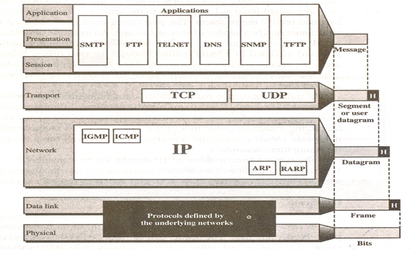

The TCP/IP reference model is used in the grandparent of all wide area computer networks, the ARPANET, and its successor, the worldwide Internet.
The ARPANET was research network sponsored by the DoD. It eventually connected hundreds of universities and government installations, using leased telephone lines. When satellite and radio networks were added later, the existing protocols had trouble internetworking with them, so new reference architecture was needed.
The ability to connect multiple networks in a seamless way. Another major goal was that the network be able to survive loss of subnet hardware, with existing conversations not being broken off.
The TCP/IP protocol suite does not define these two layers. It is left to the underlying networks to use whatever standard or protocol they desire.
The network layer offers packet-switched connectionless service. It contains few protocols like.
Responsible for creating network layer packets called IP datagram’s and sending them to the destination. IP datagram is a variable length packet (up to 65,536 bytes) consisting of two parts: header and data. The header can be from 20 to 60 bytes and contains information essential to routing and delivery.
ARP is used to find the physical address (MAC Address) of the node when its Internet address (IP address) is known.
Allows a host to discover its Internet address when it knows only its physical address.
The ICMP is a mechanism used by hosts and routers to send responding. It also handles both control and error messages, but its sole function is to report problems, not correct them.
IP addressing supports multicasting. Class D addresses are multicast addresses; The IGMP has been designed to help a multicast router identify the hosts in a LAN that are members of a multicast group.
The transport layer of the TCP/IP protocol suite contains two protocols: TCP and UDP.
is a reliable connection-oriented protocol that allows a byte stream originating on one machine to be delivered without error on any other machine in the Internet. TCP also handles flow control.
is an unreliable connectionless protocol. It is widely used in applications in which prompt delivery is more important than accurate delivery, such as transmitting speech or video.
The application layer in the TCP/IP protocol suits contains several protocols (such as TELNET, FTP, SMTP, DNS, HTTP, NNTP) used by users and programs to access resources in a remote system.